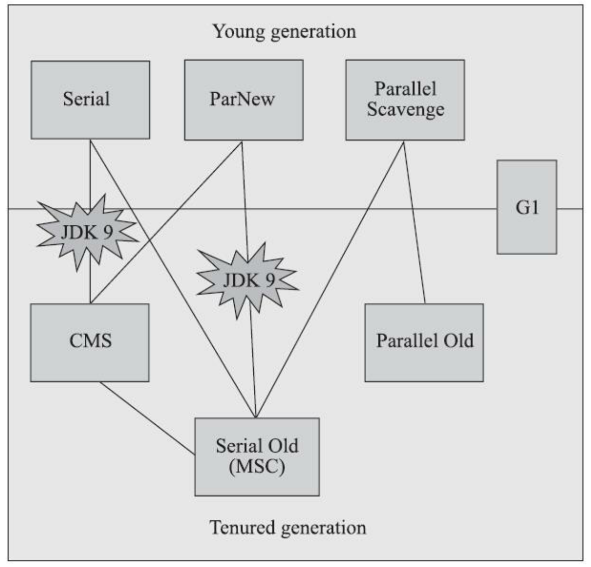
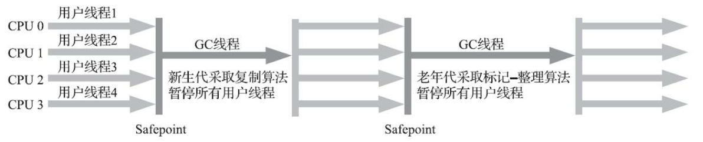
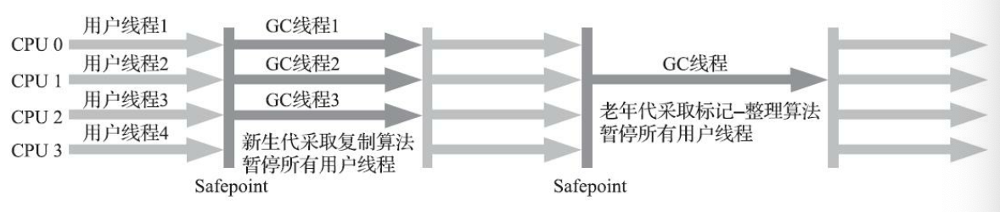
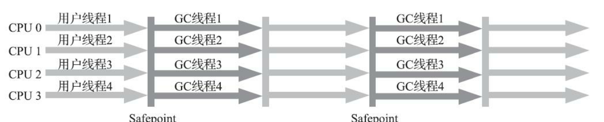
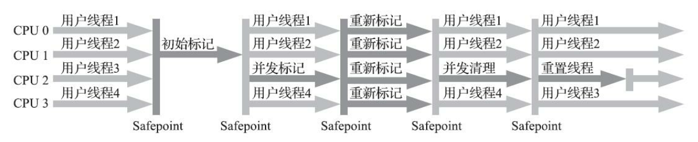
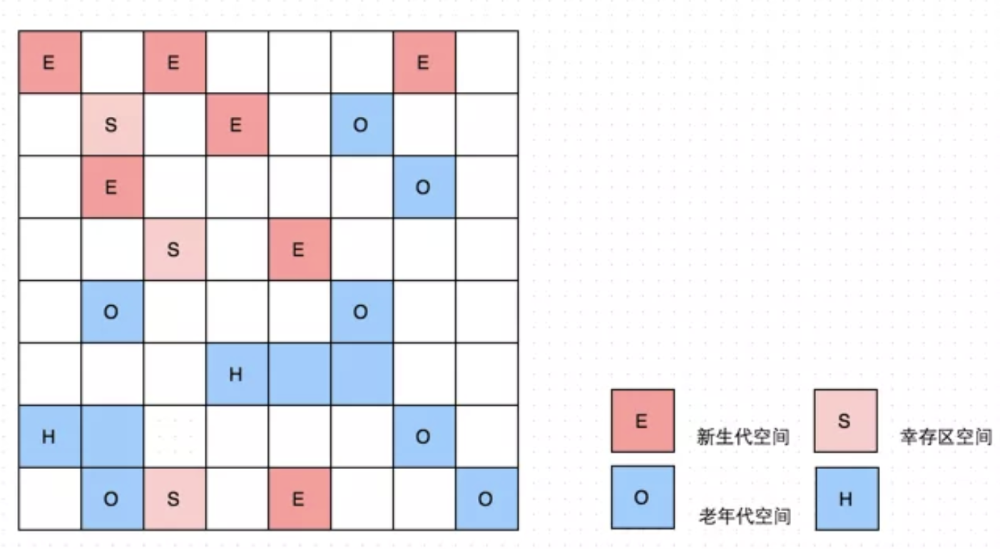
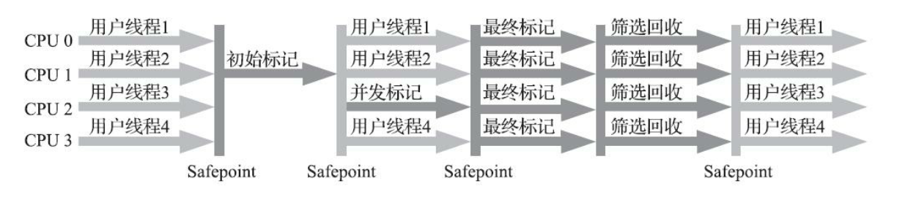

如果说收集算法是内存回收的方法论，那垃圾收集器就是内存回收的实践者。

一.Serial收集器
Serial收集器是最基础、历史最悠久的收集器，曾经(在JDK1.3.1之前)是HotSpot虚拟机新生代收集器的唯一选择。看名字就能猜到，这个收集器是一个单线程工作的收集器，但它的“单线程”的意义并不仅仅是说明它只会使用一个处理器或者一条收集线程去完成垃圾收集工作，更重要的是强调在它进行垃圾收集时，必须暂停其它所有工作线程，直到它收集结束。“Stop The World”这项工作是由虚拟机在后台自动发起和自动完成的，在用户不可知、不可控的情况下把用户的正常工作的线程全部停掉，这对很多应用来说都是不能接受的。
事实上，迄今为止，Serial收集器依然是HotSpot虚拟机运行在客户端模式下的默认新生代收集器，有着优先于其它收集器的地方，那就是简单而高效(与其它收集器的单线程比较)，对于内存资源受限的环境，它是所有收集器里额外内存消耗最小的；对于单核处理器或者处理核心数较少的环境来说，Serial收集器由于没有线程交互的开销，专心做垃圾收集自然可以获得最高的单线程收集效率。
下图为Serial/Serial Old收集器运行示意图：

二.ParNew收集器
ParNew收集器实质上是Serial收集器的多线程并行版本，除了同时使用多条线程进行垃圾收集之外，其余的行为包括Serial收集器可用的所有控制参数、收集算法、Stop The World、对象分配规则、回收策略等都与Serial收集器完全一致，在实现上这两种收集器也共用了相当多的代码。
ParNew/Serial Old收集器运行示意图：
ParNew收集器除了支持多线程并行收集之外，其它与Serial收集器相比并没有太多创新之处，但它却是不少运行在服务器模式下的HotSpot虚拟机，尤其是JDK7之前的遗留系统中首选的新生代收集器，其中有一个与功能、性能无关但其实很重要得原因：除了Serial收集器外，目前只有它能与CMS收集器配合工作。ParNew收集器是激活CMS后的默认新生代收集器。可以说直到CMS的出现才巩固ParNew的地位，但成也萧何败也萧何，随着垃圾收集器技术的不断改进，更先进的G1收集器带着CMS继承者和替代者的光环登场。G1是一个面向全堆得收集器，不需要其他新生代收集器的配合工作。所以自JDK9开始，ParNew加CMS收集器的组合就不再是官方推荐的服务端模式下的收集器解决方案了。官方希望它能完全被G1所取代，甚至还取消了ParNew加Serial Old以及Serial加CMS这两组收集器组合的支持，这意味着ParNew和CMS从此只能互相搭配使用，再也没有其他收集器能够和它们配合了。也可以理解从此ParNew合并入CMS，成为它专门处理新生代的组成部分。ParNew可以说是HotSpot虚拟机中第一款退出历史舞台的垃圾收集器。
ParNew处理器在单核心处理器的环境中绝对不会有比Serial收集器更好的效果，甚至由于存在线程交互的开销，该收集器在通过超线程技术实现的伪双核处理器环境中都不能百分百保证超越Serial收集器。当然，随着可以使用的处理器核心数量的增加，ParNew对于垃圾收集时系统资源的高效利用还是有很多好处的。
三.Parallel Scavenge收集器
Parallel Scavenge收集器也是一款新生代收集器，它同样是基于标记-复制算法实现的收集器，也是能够并行收集的多线程收集器，Parallel Scavenge的诸多特性从表面上看和ParNew非常相似，那它有什么特别之处呢？Parallel Scavenge收集器的特点是它的关注点与其它收集器不同，CMS等收集器的关注点是尽可能低缩短垃圾收集时用户线程的停顿时间，而Parallel Scavenge收集器的目标则是达到一个可控制的吞吐量。所谓吞吐量就是处理器运行代码的事件与处理器总消耗事件的比值(吞吐量=运行用户代码时间/(运行用户代码时间+垃圾收集时间))。也就是说CMS等垃圾收集器更适合用到与用户交互的程序，因为停顿时间越短，用户体验越好，而Parallel Scavenge收集器关注的是吞吐量，而高吞吐量则可以最高效的利用处理器资源，尽快完成程序的运算任务，所以适合做后台运算等不需要太多用户交互的任务。
Parallel Scavenge收集器提供了两个参数来精确控制吞吐量，分别是控制最大垃圾收集时间的-XX:MAXGCPauseMillis参数及直接设置吞吐量大小的-XX:GCTimeRatio（默认99%）。
除了以上两个参数，还可以用Parallel Scavenge收集器提供的第三个参数-XX:UseAdaptiveSizePolicy，开启这个参数后，就不需要手工指定新生代大小、Eden与Survivor比例等细节，只需要设置好基本的堆大小，以及最大垃圾收集时间与吞吐量大小，虚拟机就会根据当前系统运行情况收集监控信息，动态调整这些参数以尽可能地达到我们设定的最大垃圾收集时间或吞吐量大小这两个指标。自适应策略也是Parallel Scavenge与ParNew的重要区别。
四.Serial Old收集器
Serial Old是Serial收集器的老年代版本，它同样是一个单线程收集器，使用标记-整理算法。这个收集器的主要意义也是提供客户端模式下的HotSpot虚拟机使用。如果在服务端模式下，他可能有两种用途：一种是在JDK5以及之前的版本中与Parallel Scavenge收集器搭配使用，另外一种就是作为CMS收集器发生失败时的后备预案。它与Serial收集器配合使用示意图如下：
五.Parallel Old收集器
Parallel Old收集器是Parallel Scavenge收集器的老年代版本，支持多线程并发收集，基于标记-整理算法实现。这个收集器是直到JDK6时才开始提供的，在此之前，新生代Parallel Scavenge收集器一直处于相当尴尬的状态，原因是如果新生代选择了Parallel Scavenge收集器，老年代除了Serial Old收集器以外别无选择，其它表现良好的老年代收集器，如CMS无法与它配合工作。由于老年代Serial Old收集器在服务端应用性能上的拖累，使用Parallel Scavenge收集器也未必能在整体上获得吞吐量最大化的效果。同样，由于单线程的老年代收集器中无法充分利用服务器多处理器的并行处理能力，在老年代内存空间很大而且硬件规格比较高级的运行环境中，这种组合的优势设置不一定比ParNew加CMS的组合来的优秀。
直到Parallel Old收集器出现后，吞吐量优先收集器终于有了比较名副其实的搭配组合，在注重吞吐量或者处理器资源较为稀缺的场合，都可以优先考虑Parallel Scavenge加Parallel Old收集器这个组合。Parallel Scavenge和Parallel Old收集器运行示意图如下：

六.CMS收集器
CMS(Concurrent Mark Sweep)收集器是一种以获取最短回收停顿时间为目标的收集器。目前很大一部分的Java应用集中在互联网网站或者基于浏览器的B/S系统的服务端上，这类应用通常都会较为关注服务的响应速度，希望系统停顿时间尽可能短，已给用户带来良好的交互体验。CMS收集器就非常适合这类应用的需求。
从名字上就可以看出CMS收集器是基于标记-清除算法实现的，他的运作过程对于前面几种收集器来说要更复杂一些，整个过程分为四个步骤，包括：
- 初始标记
- 并发标记
- 重新标记
- 并发清除
其中初始标记、重新标记这两个步骤仍然需要“Stop The World”。初始标记仅仅只是标记一下GC Roots能直接关联到的对象，速度很快；并发标记阶段就是从GC Roots的直接关联对象开始遍历整个对象图的过程，这个过程耗时较长但是不需要停顿用户线程，可以与垃圾收集线程一起并发运行；而重新标记阶段则是为了修正并发标记期间，因用户程序继续运作而导致标记产生变动的那一部分对象的标记记录，这个阶段的停顿时间通常会比初始标记阶段稍长一些，但也远比并发标记阶段的时间短；最后是并发清除阶段，清理删除掉标记阶段判断的已经死亡的对象，由于不需要移动存活对象，所以这个阶段也是可以与用户线程同时并发的。
由于在整个过程中耗时最长的并发标记和并发清除阶段中，垃圾收集器线程都可以与用户线程一起工作，所以从总体上来说，CMS收集器的内存回收过程是与用户线程一起并发执行的。CMS垃圾收集器运行示意图如下：

CMS是一款优秀的收集器，它最主要的有点在名字上已经体现出来：并发收集、低停顿。CMS收集器是HotSpot虚拟机追求低停顿的第一次成功尝试，但它还远达不到完美的程度，至少有以下三个明显的缺点：
首先，
CMS收集器对处理器资源非常敏感。事实上，面向并发设计的程序都对处理器资源比较敏感。在并发阶段，他虽然不会导致用户线程停顿，但却会因为占用了一部分线程（或者说处理器的计算能力）而导致应用程序变慢，降低总吞吐量。CMS默认启动的回收线程数是(处理器核心数量 + 3)/4，也就是说，如果处理器核心数在四个以上，并发回收时垃圾收集线程占用不超过25%的处理器运算资源，并且会随着处理器核心数量的增加而下降。但是当处理器核心数量不足四个时，CMS对用户线程的影响就可能变得很大。然后，由于
CMS收集器无法处理浮动垃圾，有可能出现“Concurrent Mode Failure”而导致另一次完全的“Stop The World”的Full GC的产生。在CMS的并发标记和并发清理阶段，用户线程是还在继续运行的，程序在运行自然就还会伴随有新的垃圾对象不断产生，但这一部分垃圾对象是出现在标记过程结束以后，CMS无法在当次收集中处理掉它们，只好留待下一次垃圾收集时再清理掉。这一部分垃圾就被称为浮动垃圾。同样也是由于此原因，那就还需要预留足够内存空间提供给用户线程使用，因此CMS收集器不能像其它收集器那样等待到老年代几乎完全被填满了再进行收集，必须预留一部分空间供并发收集时的程序运作使用。要是CMS运行期间预留的内存无法满足程序分配新对象的需求，就会出现一次并发失败，这时候虚拟机不得不启动后备预案：冻结用户线程的执行，临时启用Serial Old收集器来重新进行老年代的垃圾收集，但这样停顿时间就更长了。CMS采用的是标记清除法，这意味着收集结束后会有大量空间碎片产生。空间碎片过多时，将会给大对象分配带来很大麻烦，往往会出现老年代还有很多剩余空间，但就是无法找到足够大的连续空间来分配当前对象，而不得不触发一次Full GC的情况。
七.Garbage First收集器
Garbage First（简称G1）收集器是垃圾收集器技术发展历史上的里程碑式的成果，它开创了收集器面向局部收集的设计思想和基于Region的内存布局形成。G1是一款主要面向服务端应用的垃圾收集器。主要有以下几个特点：
- 像
CMS收集器一样，能与应用程序线程并发执行 - 整理空闲空间更快
- 需要
GC停顿时间更好预测 - 不会像
CMS那样牺牲大量的吞吐性能 - 不需要更大的
Java Heap
与CMS相比，它在以下两个方面表现出色：
- 运作期间不会产生内存碎片，
G1从整体上看是采用的是标记-整理法，局部(两个Region)上看是基于复制算法实现的，两个算法都不会产生内存碎片，收集后提供规整的可用内存，这样有利于程序的长时间运行。 - 在
STW上建立了可预测的停顿时间模型，用户可指定期望停顿时间，G1会将停顿时间控制在用户设定的停顿时间以内。
为什么G1能建立可预测的停顿模型呢？首先是思想上的转变，在G1收集器出现之前的所有其它收集器，垃圾收集的目标范围要么是整个新生代(Minor GC)，要么就是整个老年代(Major GC)，再要么就是整个Java堆(Full GC)。而G1跳出了这个樊笼，它可以面向堆内存任何部分来组成回收集(Collection Set，一般简称CSet)进行回收，衡量标准不再是它属于哪个分代，而是哪块内存中存放的垃圾数量最多，回收收益最大，这就是G1收集器的Mixed GC模式。
G1开创的基于Region的堆内存布局是它能够实现这个目标的关键。虽然G1也仍是遵循分代收集理论设计的，但其堆内存的布局与其它收集器有非常明显的差异：G1不再坚持固定大小以及固定数量的分代区域划分，而是把连续的Java堆划分为多个大小相等的独立区域(Region)，每一个Region都可以根据需要，扮演新生代的Eden空间、Survivor空间，或者老年代空间。收集器能够对扮演不同角色的Region采用不同的策略去处理，这样无论是新创建的对象还是已经存活了一段时间、熬过多次收集的旧对象都能够取得很好的收集效果。
Region中还有一类特殊的Humongous区域，专门用来存储大对象。G1认为只要大小超过了一个Region容量的一半的对象即可判定为大对象。这样超大对象直接分配到了老年代，防止了反复拷贝移动。

虽然G1仍然保留新生代和老年代的概念，但新生代和老年代不再是固定的了，它们都是一系列区域(不需要连续)的动态集合。G1收集器之所以能建立可预测的停顿时间模型，是因为它将Region作为单次回收的最小单元，即每次收集到的内存空间都是Region大小的整数倍，这样可以有计划地避免在整个Java堆中进行全区域的垃圾收集。更具体的处理思路是让G1收集器去跟踪各个Region里面的垃圾堆积的“价值”大小，价值即回收所获得的空间大小以及回收所需时间的经验值，然后在后台维护一个优先级列表，每次根据用户设定允许的收集停顿时间，优先处理回收价值收益最大的那些Region，这就是“Garbage First”名字的由来。
那么G1分配成这样有什么好处呢？传统的收集器如果发生Full GC是对整个堆进行全区域的垃圾收集，而分配成各个Region的话，方便G1跟踪各个Region里垃圾堆积的价值大小(回收所获得的空间大小及回收所需要的经验值)，这样根据价值大小维护一个优先列表，根据允许的收集时间，优先收集回收价值最大的Region，也就避免了整个老年代的回收，也就减少了STW造成的停顿时间。同时由于只收集部分Region，可就做到了STW时间的可控。这种使用Region划分内存空间，以及具有优先级的区域回收方式，保证了G1收集器在有限时间内获取尽可能高的收集效率。
G1收集器的运作过程大致可划分为以下四个步骤：
- 初始标记：仅仅只是标记一下
GC Roots能直接关联到的对象 - 并发标记：从
GC Root开始对堆中对象进行可达性分析，递归扫描整个堆里的对象图，找出要回收的对象，这阶段耗时比较长，但是可以与用户程序并发执行。 - 最终标记：对用户线程做另一个短暂的暂停，用于处理并发阶段结束后仍遗留下来最后那少量的
SATB记录。 - 筛选回收：负责更新
Region的统计数据，对各个Region的回收价值和成本进行排序，根据用户所期望的停顿时间来制定回收计划，可以自由选择任意多个Region构成回收集，然后把决定回收那一部分Region的存活对象复制到空的Region中，再清理掉整个旧的Region的全部空间。这里的操作设计存活对象的移动，是必须暂停用户线程，由多条收集器线程并行完成的。
G1收集器运行示意图如下：

从上述阶段的描述可以看出，G1收集器除了并发标记外，其余阶段也是要完全暂停用户线程的，换言之，它并非纯粹的追求低延迟，官方给它设定的目标是在延迟可控的情况下获得尽可能高的吞吐量，所以才能担当的起全功能收集器的重任与期望。